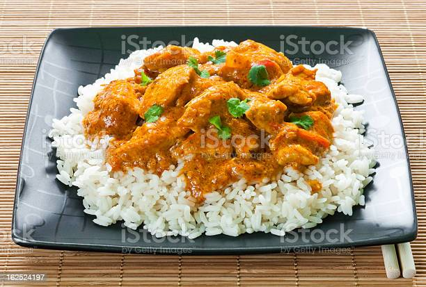

Curry Chicken

Description
This is a local favorite in my country. Curry chicken and white
rice. My island kinfolk tend to love curry in general, but curry chicken
is definitely a favorite.
Ingredients
- chopped chicken
- maggi chicken season it up
- curry powder
- onion
- scotch bonnet pepper
- green onions
- thyme
- irish potato
- cooking oil
- garlic
- jasmine or basmati rice
- water
- salt
- butter
Steps
- heat pan then add 2 table-spoons of cooking oil
- when oil is hot add generous amount of curry powder
- let curry heat in oil until dark but not burnt
- season chicken with generous portion of maggi seasoning
- add seasoned chicken to heated oil and curry mix
- stir the mix around
- place lid on pan to allow steaming
- add 2 cups of water in another pot
- add 1 tea spoon of salt to water
- cover pot and allow water to boil
- chop up onions, green onions, garlic and pepper
- dice the irish potato
- add all chopped and diced ingredients to the curry chicken
- add the thyme the curry chicken as well
- add a cup of rice to the boiling water
- add two table-spoons of butter to rice mix